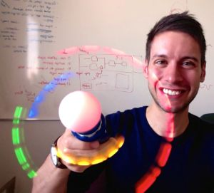

SAVE/Point
SAVE/Point is a collaboration of astronomers and educators dedicated to developing new, innovative games and educational applications to teach astronomical concepts at all levels.


Our games
A game of gravity.
Super Planet Crash is a browser-based gravity game where players create planetary systems and watch them evolve. The more crowded and chaotic the system, the better! Super Planet Crash has been played more than 12,000,000 times, and it has been featured in articles on The Verge, Huffington Post, io9, Space.com, VICE, & others.
Help an alien civilization design new planetary systems.
You are the newest employee of the space-dozing company Nova Planetia, working for short-tempered Big Boss Reaz-7. Prove yourself worthy of a promotion by designing planetary systems to the exact specifications of your fickle customers.
Our apps
Discover exoplanets using real astronomical data.
Systemic Live is a web application that lets you visualize real astronomical data from telescopes all around the world, and analyze them to discover the signature of a planetary system. Systemic Live is a great educational tool for students, teachers and enthusiasts interested in exoplanets and data analysis. It has become part of the curricula for undergraduate and graduate classes at several US and world institutions of higher education (see testimonials here).
About Us

Lead System Engineer
Stefano Meschiari is a W. J. McDonald Postdoctoral Fellow at the University of Texas at Austin. He is the principal investigator and lead programmer & designer of the SAVE/Point collaboration, developing apps & games with a focus on astronomy education. His research focuses in understanding how planetary systems form, discovering new exoplanets, and coming up with new ways to involve the public in the excitement of the exoplanet age.
Dr. Randi Ludwig
Space Academy Principal
Randi Ludwig is the Assistant Director of UTeach Primary and faculty in the University of Texas at Austin College of Natural Sciences, where she develops hands-on curricula and teaches science courses designed for elementary education majors. She puts her classroom and curriculum development experience to use in the SAVE/point collaboration by designing learning objectives for game levels, evaluating accessibility for users of many backgrounds, and assessing the effectiveness of game design on user understanding of scientific concepts.
Space Orchestra Director
Joel Green is the Project Scientist in the Office of Public Outreach at Space Telescope Science Institute (STScI), which operates the science mission of the Hubble Space Telescope and James Webb Space Telescope. Previously he was a Research Associate at the University of Texas at Austin. He has contributed the original music tracks, storyboard, and assisted in level and app design.